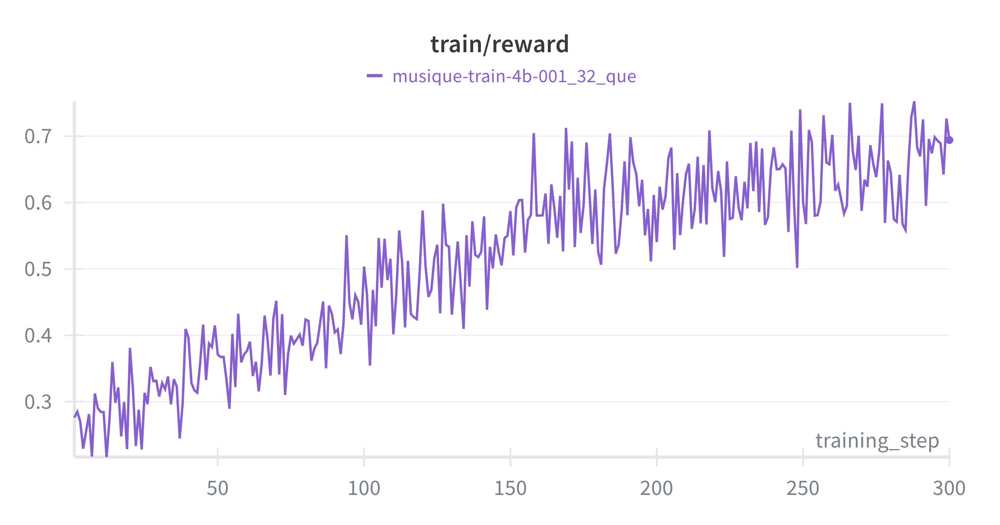
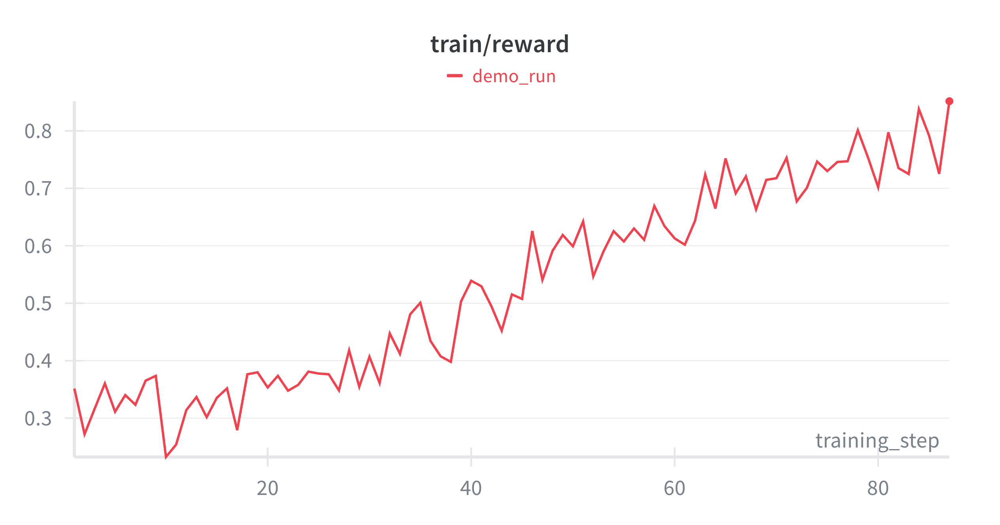
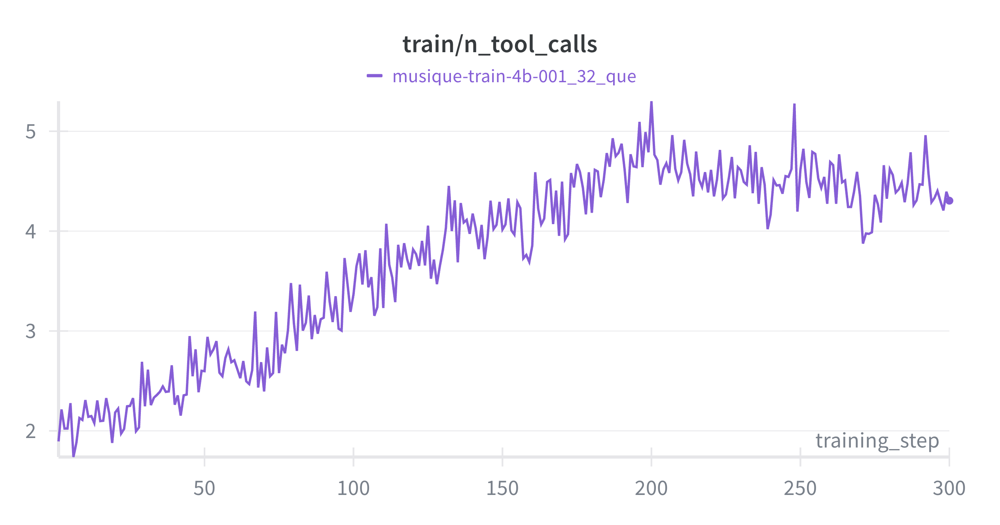

A Few Hundred Dollars for a Frontier-Class Search Agent
I want to make a case that runs against the grain of almost every retrieval stack I have worked on. The received wisdom is that you buy quality with scale a bigger embedding model, a heavier reranker, a frontier LLM sitting on top charging by the token. I spent a few days and about fifty dollars testing the opposite bet: take a small, four-billion-parameter model, hand it tools and a reinforcement-learning environment built around one cheap, verifiable reward, and teach it to search. Not to answer. To search.
First, why agentic search at all. The standard pattern is RAG: embed the query, pull the top-k relevant documents in a single shot, and hand them to a model that writes the answer. That works beautifully when the answer lives in one passage. But the chain breaks on multi-hop questions the ones where you have to find one fact, use it to work out what to look for next, and stitch several lookups together. A single retrieval pass cannot do that; it does not know what the second hop is until it has read the first. What those questions actually need is a model that searches, reads, reasons, and searches again an agent in the loop, not a retriever sitting in front of it.
And that is exactly where the interesting trade lives: efficiency, accuracy, and cost all pull against one another. More reasoning and more tool calls buy accuracy on hard questions, but they cost tokens, latency, and dollars brutally so if a frontier model is doing the reasoning on every hop. This tension is why a whole stream of research has swung toward agentic search. The insight underneath it is a simple chain: cheaper, sharper retrieval of knowledge → cheaper reasoning → a faster and more correct answer. Push the cost and quality of the search step in the right direction and the entire pipeline downstream of it gets cheaper and better. This post is about pushing on that first link making the knowledge-finding step itself small, fast, and accurate.
The punchline first, because it is the reason I am writing this at all. On a fair, held-out benchmark, that little model beats a tuned vector-plus-reranker pipeline and lands within noise of a frontier model doing the same task while being small enough to run locally, fast enough to sit behind a search bar, and cheap enough that the whole training run cost less than a nice dinner. With the right data and the right RL environment, a task-specific model that is smaller, faster, and cheaper can reach frontier-class performance for a few hundred dollars, not a few hundred thousand.
This post is the whole story: the design choices, the formulas that make the training stable, the pre-flight machinery I built to keep the data honest, the moment I watched the model teach itself to stop guessing and start searching, and the numbers at the end. I will also be honest about what I could not claim.
The one decision everything hangs on: return documents, not answers
The model does not write an answer. Given a question, it issues its own searches over a fixed corpus, reads what comes back, and ends by emitting a ranked list of document IDs the sources it believes are necessary. It never says "the answer is Toronto Coach Terminal." It says "look at documents 42 and 118." That one choice pays off three times over, and each payoff turned out to matter for cheap, stable training:
- The reward becomes verifiable. Scoring a ranked list against a known target set is set membership and a logarithm. No LLM judge, no fuzzy answer-matching, no reward model to drift.
- It resists memorization. Requiring the actual source documents forces real tool use instead of guessing an answer from parametric memory.
- It gives partial credit. Finding two of three needed documents beats finding none, and the metric feels that difference smoothly.
The interaction is a three-tool loop, and it is deliberately small:
search("query") -> documents with IDs + short excerpts
read("doc_id") -> the full text of one document
report(["id1","id2"]) -> terminal: submit the ranked list, end the episodeEvery document ID the model sees is obfuscated and re-randomised each rollout, so it cannot memorise a question-to-ID lookup instead of retrieving I return to the mechanics of this in the data section.
The reward: NDCG over a target set
The model's ranked list L = (l₁, …, lₙ) is scored against the target set T the documents actually needed with Normalized Discounted Cumulative Gain under binary relevance. A document is relevant (1) or not (0).
The logarithmic discount is exactly why I chose NDCG over plain recall. It rewards putting needed documents high in the list, and its diminishing returns quietly punish padding the list to fish for credit. A model that dumps ten documents to be safe pays for it; a model that returns a short, correct, well-ordered list scores best. That pressure toward a precise list rather than a hedge turns out to be the entire personality of the trained model.
The full training reward adds two light shaping terms: a format bonus so the output stays parseable, and a soft length penalty that nudges the reported count toward the true target size.
NDCG is exact and cheap. Its value as a signal depends entirely on the target set T matching the truly-necessary set. That is not a modeling problem. It is a data problem and it is where most of my time actually went.
The learning rule: GRPO
Training uses Group Relative Policy Optimization no separate value network, which is a real simplification on a single GPU. For each question I sample a group of G rollouts, score each with the reward above, and compute every rollout's advantage relative to its own group's mean. Beat your group and you get reinforced; fall below it and you get suppressed.
The policy is then updated with a clipped surrogate objective, evaluated per token. With ρᵢₜ = πθ(oᵢₜ) / πθ_old(oᵢₜ) the importance ratio for token t of rollout i, and mᵢₜ a per-token mask defined in the next section:
One property of this objective quietly governs everything about the data: a question only produces a gradient if its rollouts disagree. If all G rollouts score the same, the mean equals every reward, every advantage is zero, and the question teaches the model nothing. Questions the model already always solves, or always fails, are dead weight a fact I return to when I get to the data.
Run this loop and the reward climbs. Figure 1 is the full training run I analyze throughout the rest of the post 300 steps of GRPO on the 4B policy, group size 8, 32 questions per step. Mean reward rises from roughly 0.28 to 0.70; the curve is noisy because each step samples a fresh batch of questions, but the trend is monotonic. Because NDCG is the dominant term of the reward, this is close to a direct measure of retrieval quality, not just format or length compliance. Everything that follows the data choices, the behavior curves, the final numbers is about understanding and improving this curve.

Token-in, token-out: computing that per-token loss correctly
The objective above sums over tokens, so before it can run, something has to decide which tokens the loss is computed on and what the model's probability for each one is. In a single-turn setup this is trivial: the model generates one completion, you have its tokens, you compute their log-probabilities, done. In a multi-turn agent it is the detail most likely to silently destroy the run.
A rollout here is not a single completion. It is a long sequence that alternates between what the model generated and what the environment injected:
[system prompt]
[user: question]
[assistant: search("union navy hospital ship")] ← model tokens
[tool: "[a1b2c3d4] USS Home was a hospital ship..."] ← injected tokens
[assistant: read("a1b2c3d4")] ← model tokens
[tool: "USS Home (1862) was purchased..."] ← injected tokens
[assistant: report(["a1b2c3d4","e5f6g7h8"])] ← model tokensTo train, the framework needs the token IDs for this whole sequence. The tempting shortcut the one that broke my first runs is to store the rollout as a list of structured message objects and, at training time, rebuild the token sequence by running the chat template over them again: tokenize(apply_chat_template(messages)). It looks harmless. It is not, because re-tokenizing a reconstructed conversation does not reproduce the exact tokens the model originally emitted.
Here is the concrete failure. Suppose during generation the model actually produced, as its own tokens, the ending of an assistant turn:
generated tokens: … ␣report ([" a1b2c3d4 "]) \nWhen that turn is serialized to a message object and later re-tokenized, the chat template re-inserts role markers and normalizes whitespace it may drop the trailing newline, add one after the tool block, or change the space that precedes report. Byte-pair encoding is sensitive to exactly those neighboring characters, so a changed space or newline re-segments the boundary: what was one token ␣report becomes two, ␣ + report, and every token index downstream shifts. The reconstructed sequence is almost the original, differing only at the seams where model output meets tool output but "almost" is fatal.
The damage happens in the importance ratio. GRPO evaluates ρᵢₜ = πθ(oᵢₜ) / πθ_old(oᵢₜ) on whatever tokens you feed it. At a re-segmented seam, the token oᵢₜ is one the model would essentially never have generated in that context, so πθ_old(oᵢₜ) is tiny. Dividing by a tiny number makes ρᵢₜ explode; a handful of these seam tokens then dominate the gradient. The visible symptom is a reward curve that rises for a while and then falls off a cliff into degenerate output exactly the trajectory reported in prior work on this bug.
The fix is token-in, token-out: never round-trip through message objects. Keep the exact token IDs the model emitted during generation and train on those directly. The tool-result tokens stay in the sequence so the context is correct, but they are held out of the loss with a mask I do not want to train the model to predict the tool's output, only its own tokens.
No reconstruction, no re-tokenization, no importance-sampling hack to paper over the seam. Just the real tokens the model produced, with the injected text masked out. It is the least glamorous decision in the project and close to the most important: with it the reward curve rises and stays up; without it, it detonates around step 200.
Pre-flight: filtering the data before it wastes a single gradient
Recall the zero-advantage property of GRPO: a question only produces a gradient if its rollouts disagree. That is not a footnote; it is a budget. On a single GPU, every rollout costs time, and a question whose group unanimously scores 1.0 (too easy) or 0.0 (broken or too hard) burns that time for nothing. So before committing any data to a training run, I built a pre-flight difficulty filter: run a small group of rollouts with the current policy on each candidate question, and keep only the ones where the reward has variance across the group.
The intuition is simple: a synthetic question is only useful if the model sometimes fails it. All-perfect groups mean the question is trivial; all-zero groups mean it is broken or unanswerable. What survives is the band in the middle questions hard enough to teach something but not so hard they are hopeless. This is the calibration loop that makes data trainable, not merely valid.
The pre-flight also became my best debugging tool, entirely by accident. The very first time I ran it, it filtered out everything every question came back zero-advantage. My first reaction was despair: the questions must all be broken. They were not. The filter had surfaced a much deeper bug. My reward was comparing the model's obfuscated reported IDs against the real target IDs, so nothing ever matched and every rollout scored a flat zero perfectly uniform, perfectly zero-advantage. The filter was working correctly; it was screaming that my scoring was wrong.
Fixing that surfaced the next layer. When I first tried a smaller 1.7B policy, the pre-flight traces showed it was not driving the tools at all instead of calling search and waiting for a real result, it would hallucinate the entire tool conversation inside one message, inventing fake document IDs and fake search results. It never yielded control back to the loop, so it never saw a real document. Real IDs only enter the context when the environment actually executes a tool; a model that role-plays the whole exchange in its head is arguing with a hallucination. Moving to the 4B model, which respects the turn-by-turn protocol, fixed it. I would not have found either bug without the pre-flight staring me in the face with a wall of zeros.
The lesson I keep relearning: the failures that cost you the most are the ones that produce silently wrong numbers, not loud crashes. A filter that tells you "none of your data has signal" is worth more than a stack trace.
For the final run I actually trained on real human-written multi-hop questions, whose labels are already trustworthy, so the pre-flight was not strictly necessary GRPO simply gets no gradient from any zero-advantage group and moves on. But building it was what taught me the environment was correct, and it is the exact machinery you need the moment you generate your own data.
The data: real multi-hop questions over one index
I built the corpus from a multi-hop QA dataset's paragraphs, deduplicated by text. That dedup step sounds like housekeeping and was in fact one of the largest quality wins in the project. The raw corpus stores the same passage under many different IDs, so the agent would surface the right passage under the wrong ID and score zero a correct answer marked incorrect, invisibly. Collapsing identical passages to a single canonical ID, and remapping every label to it, removed a large hidden penalty I had been paying without knowing it.
Exact-text deduplication is only the surface of the problem, though, and it exposes something specific about training a search agent with a retrieval reward. NDCG makes the reward verifiable, but it does so by treating relevance as binary: the labeled target set T is relevant, and every other document in the corpus is not. That assumption is convenient and false. In a real corpus, plenty of documents outside T are partially or genuinely relevant to the question they are simply not the passages the dataset happened to label. Under a binary target set these are false negatives: on-topic documents the reward scores as noise. When the agent retrieves one, it is penalized for surfacing something that is, in substance, a reasonable answer.
This matters for learning, not just for bookkeeping. The gradient is now fighting label noise: the policy has to run many more rollouts to disentangle "the document the dataset labeled" from "a document that is clearly on-topic but unlabeled," because the reward keeps punishing the latter inconsistently. Exact-hash dedup does nothing for this two passages can be word-for-word different and still be conceptual near-duplicates that create exactly this false-negative pressure. To probe it, I ran a separate experiment on a small subset with a concept/topic-level deduplication, collapsing documents that cover the same fact rather than the same string, so that each question's answer has essentially one home in the corpus and the false-negative rate drops.

The effect is clear: with the conceptual false negatives removed, reward climbs faster and reaches a higher ceiling, because the model no longer wastes rollouts being punished for reasonable retrievals. But this is a training-speed result, not a free lunch, and it is worth being precise about the trade. Curating the corpus down to one document per concept sanitizes the retrieval space the model is now learning in a cleaner world than the one it will face in production, where near-duplicate and partially-relevant documents are the norm. That version trains faster but generalizes worse. The full, messy corpus is slower to learn from precisely because it forces the model to cope with the ambiguity it will actually encounter. For the results in this post I trained on the full corpus and paid the slower curve on purpose; the concept-dedup run is here to isolate why the full curve is slower, not to claim it as the better recipe.
The model trains on the dataset's real training questions, whose supporting-document labels give the target set T directly. Evaluation is on a strictly held-out set of real questions, scored the same way. Training touched no evaluation question and no evaluation label; the corpus is shared between train and eval by design, exactly as closed-corpus retrieval always is.
The questions are multi-hop by construction: answering one means chaining facts across several documents, and in this dataset the chains range from two hops up to a maximum of five. A two-hop question asks the agent to find one document, extract a fact, and use it to locate a second; a five-hop question repeats that four times. That ceiling is worth holding onto, because it bounds the behavior. No question requires more than five documents, so a well-behaved policy needs at most roughly five search-and-read cycles and no more which is exactly why, in the next section, the tool-call curve rises and then flattens near that ceiling instead of growing without bound. The agent learns to make about as many calls as the question's hop depth demands.
One more safeguard follows directly from the task being "report document IDs." Over many epochs, a model could try to shortcut retrieval by memorizing a question-to-ID mapping rather than searching. To close that door, the document IDs are re-randomized on every rollout: the same underlying document wears a different identifier each time the model sees it, and I map the reported IDs back to the real ones only when scoring. The mapping the model would need to memorize never holds still, so the only stable way to earn reward is to actually find the document, not to recall its name.
Training dynamics
Figure 1 showed the reward rising over the run; the accuracy gain it represents is the product of a behavioral change, which two more curves make explicit. Both are measured on the same run.


Figures 3 and 4 describe the behavioral change behind the reward curve. Mean completion length falls from roughly 330 tokens to 120 (Figure 3), while the mean number of tool calls per rollout rises from about 2 to 4.3 (Figure 4). Early in training the policy generates long completions and few tool calls it reasons from parametric memory and rarely queries the corpus, which scores near zero under the reward. As training proceeds it shortens its reasoning and issues more search and read calls, grounding each answer in retrieved documents. The tool-call count does not grow without bound: it flattens around 4 to 5, which is the corpus's hop ceiling no question needs more than five documents, so a competent policy converges on roughly one search-and-read cycle per hop and stops there. Neither behavior is specified in the environment or the prompt; both emerge from optimizing the NDCG reward under the length penalty. The net effect is a policy that reasons less in text and retrieves about as much as each question's hop depth requires.
Results
Every system below is evaluated on the identical held-out question set (n = 200) over the identical corpus, so the comparison is fair. The classic baselines return the top ten documents; the agent returns only what it decides to report.
| System | NDCG | Recall | Precision | F1 |
|---|---|---|---|---|
| Vector-only (top-10) | 0.437 | 0.471 | 0.113 | 0.180 |
| Vector + reranker (top-10) | 0.477 | 0.471 | 0.113 | 0.180 |
| Trained 4B (1 rollout) | 0.468 | 0.420 | 0.495 | 0.440 |
| Trained 4B + RRF (2 rollouts) | 0.594 | 0.574 | 0.473 | 0.498 |
| GPT-5.4, frontier (1 rollout) | 0.620 | 0.586 | 0.620 | 0.588 |
Three readings, in order of importance.
The trained 4B beats classical RAG. Single-shot, it ties the vector-plus-reranker pipeline on NDCG (0.468 vs 0.477) and sits well above vector-only (0.437). With four fused rollouts it pulls clearly ahead of the reranker on every metric at once. But the ranking score understates the difference; the precision and F1 columns are where the two approaches actually diverge.
What precision and F1 imply. Precision is the fraction of returned documents that are actually relevant; F1 is the harmonic mean of precision and recall, the single number that rewards being both complete and clean. Notice first that the two baselines are identical on recall, precision, and F1 (0.471 / 0.113 / 0.180) and they must be, because a reranker only reorders the same ten documents the vector search returned. It cannot change which documents are present, only their order, so it lifts NDCG (0.437 → 0.477) while leaving recall, precision, and F1 exactly where they were. Both baselines pay the same structural tax: to reach recall 0.47 they hand back ten documents per query, of which roughly nine are irrelevant. Precision 0.11 is precisely that one relevant document for every nine passed downstream.
The trained agent inverts this. At precision 0.50 it returns a two-to-three document list that is right about half the time, and its F1 of 0.44 is more than double either baseline's 0.18 cleaner and, hop-for-hop, competitive on completeness. That gap is not cosmetic. Whatever consumes these results a model that must read and reason over the returned set, or a person spends its budget on what it is handed. A ten-document dump at precision 0.11 forces the consumer to sift nine distractors for every hit; a three-document list at precision 0.50 hands over a set it can act on. This is the length penalty in the reward paying off: NDCG on its own would tolerate a long hedge, so penalizing over-reporting is what converts a decent ranking into a short, trustworthy answer. It is the difference between a system that improves the order of the noise and one that removes it.
It approaches the frontier model. GPT-5.4, driving the exact same tools, scores 0.620. My 4B with reciprocal-rank fusion reaches 0.594 a gap of 0.026, within noise at this sample size. A four-billion-parameter model, with a cheap parallel eval-time trick, comes within a whisker of a frontier system on the same task.
Reciprocal Rank Fusion is the cheap lever that closes the gap. A single rollout is stochastic it might miss a target on one attempt and catch it on another. Running a few and fusing their ranked lists surfaces the documents found consistently and pushes them to the top.
The rollouts run in parallel, so the recall it buys costs almost no wall-clock time. It is the eval-time analogue of the training thesis: a little more compute on a small model, spent well, goes a very long way.
The part that is the actual point: the bill
None of this would interest me if it cost what a frontier model costs to build. It did not. The training loop is a LoRA adapter about 0.4% of the model's parameters updated for a few hundred steps on a single GPU. The base model serves its own rollouts and updates its own weights on the same card. The reward is free to compute. The data is a public dataset's real questions.
The entire effort the synthetic-data experiments, the pre-flight runs, the training, and all the false starts came in on the order of tens of dollars of compute, comfortably under a few hundred. There is a well-known public precedent, an email agent trained with the same family of tools, that landed near eighty dollars on one GPU. I am in the same neighborhood.
Now weigh that against inference, because that is where the asymmetry compounds in the opposite direction from where intuition points. A frontier model driving this agent is billed per token, per turn, forever real money per query at scale, with a network round-trip on every search and every read. My 4B runs locally: no per-token bill, far lower latency, and a footprint small enough to serve as a sub-agent or power a search bar directly. You pay once, in tens of dollars, to stop paying a frontier model on every single request for the rest of the product's life.
That is the whole argument. Retrieval over a fixed corpus is bounded and verifiable. It does not need a general-purpose frontier model reasoning from scratch on every query. It needs a small model that has been taught the specific behavior search, read, decide, report by reinforcement learning against a cheap exact reward. Once you accept that framing, the economics invert: the specialist is smaller, faster, cheaper, and, on its own task, nearly as good as the generalist you were renting.
What it adds up to
A 4B model, one GPU, tens of dollars, a verifiable NDCG reward, token-exact GRPO, a pre-flight filter to keep the data honest, and a few hundred real multi-hop questions and I got a search agent that beats a tuned vector-plus-reranker pipeline and runs within noise of a frontier model on the same task. The lever was never scale. It was the right reward, an RL environment that keeps training stable, data whose labels are actually the thing I wanted to measure, and the patience to watch a small model learn to stop guessing and start searching. Task-specific beats general-purpose on the task, and it does so at a price that turns "which frontier model do we rent" into "which behavior do we own."